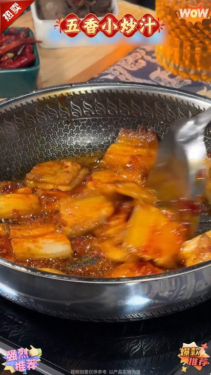
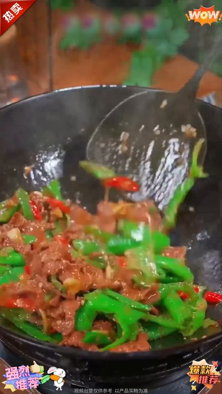
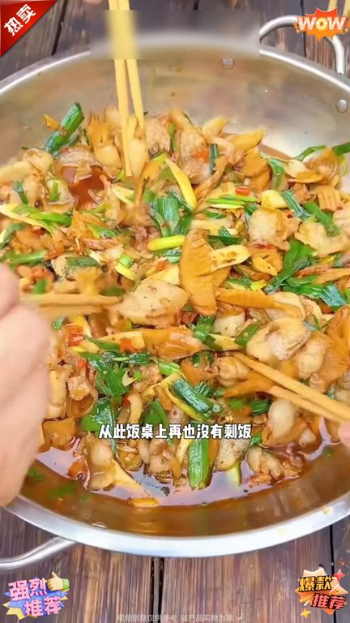

TOP 1 · 代表素材深度拆解
核心放量 点击承压
视频为原始素材 HTTPS 链接；点击后加载，建议在网络环境良好时播放。
31.1万素材消耗
2.58%CTR
12.8%类目消耗占比
-0.83pp较类目均值
表现判断
该素材是类目内第 1 名，属于“核心放量”；CTR 低于类目均值。消耗体现承接规模，CTR 体现首屏与定向效率，两项应结合判断，不能仅以单指标下结论。
表达标签
口播三段式证据
开场钩子以后在炒菜酱油料酒未经葱姜蒜都不用放只需要搁一勺这个五香小炒汁包拟在家也能做出不输饭店的味道从此饭桌上再也没有胜饭不管是炒猪肉炒牛肉炒青菜还是烧茄子做回锅肉用它做的各种家常小炒都很好吃温速都能炒
中段论证白一次能吃六个月你可不要探错了这可不是普通的酱料这就是家常小炒汁有了它以后炒菜葱姜蒜酱由料酒味精都不用放只需要咬一勺这个五香小炒汁帮你在家也能做出不输饭店的味道不管是炒猪肉炒牛肉炒青菜还是烧茄子做回锅肉用它做的各种家常小炒都很好吃全家人香到舔盘子每一份都是50年大厨根据科学比例精心调配的做菜有了它从此餐桌上再也没有剩菜平时发酬不知道吃什么的赶紧去试试吧把你家…
结尾转化爱吃炒菜的懒人准备的吧这个正宗的五香小炒汁以后炒菜其他调料都不用放了只需要倒上这个五香小炒汁帮你在家也能做出不输饭店的味道从此饭桌上再也没有剩饭不管是炒猪肉炒牛肉炒青菜还是烧茄子做回锅肉用它做的各种家常小炒啊都很好吃家里平时爱做饭但比较懒的可以试一试
有效点
- 消耗占比 12.8% 说明具备投放承接能力，但 CTR 较类目均值低 0.83pp
- 口播包含明确到手机制或直播间指令，转化路径较完整
迭代动作
- 保留当前高效钩子，复制 3 个变量版本：人物、首句和首帧分别单变量测试
- 视频时长偏长，建议剪出 30–45 秒短版，仅保留钩子、两项证据和一次 CTA
- 复核功效、绝对化及价格稀缺措辞；增加适用边界和效果因人而异提示
合规关注

钩子建立 · 11.1s
场景/问题展开 · 84.1s

卖点证据 · 193.6s

转化收口 · 266.5s
查看完整口播摘要
以后在炒菜酱油料酒未经葱姜蒜都不用放只需要搁一勺这个五香小炒汁包拟在家也能做出不输饭店的味道从此饭桌上再也没有胜饭不管是炒猪肉炒牛肉炒青菜还是烧茄子做回锅肉用它做的各种家常小炒都很好吃温速都能炒全家人香到舔盘子关键是真的太省事了你不会还在用葱姜蒜酱油料酒炒菜吧怪不得做出来的菜不好吃下一次再炒菜倒上它别的调料啥都不用放的在家也能做出不输饭店的味道一上桌就抢光了从此桌上再也没胜饭就是这个五香小炒汁各种家常小炒肉菜素菜红烧茄子回锅肉都能用它来做好吃省事还不贵你也赶紧去吞一点把你家的酱油料酒味精全扔了吧自从有了这个五香小炒汁你什么调料都不用准备了现在白菜嫁到手够全家人吃半年这个酱料是新纪大厨根据口味调配好的不管是炒牛肉回锅肉还是烧茄子葱菜素菜都能炒它可以替代葱姜蒜五香粉蚝油生抽等其他调味品有了它我挑食的女儿顿顿都能吃两大碗米饭再也不说我做饭难吃了喜欢做菜的家人千万不要错过了白一次能吃六个月你可不要探错了这可不是普通的酱料这就是家常小炒汁有了它以后炒菜葱姜蒜酱由料酒味精都不用放只需要咬一勺这个五香小炒汁帮你在家也能做出不输饭店的味道不管是炒猪肉炒牛肉炒青菜还是烧茄子做回锅肉用它做的各种家常小炒都很好吃全家人香到舔盘子每一份都是50年大厨根据科学比例精心调配的做菜有了它从此餐桌上再也没有剩菜平时发酬不知道吃什么的赶紧去试试吧把你家的酱油料酒味精全扔了吧自从有了这个五香小炒汁你什么调料都不用准备了现在白菜嫁到手够全家人吃半年这个酱料是新计大厨根据口味调配好的不管是炒牛肉回锅肉还是烧茄子葷菜素菜都能炒它可以替代葱姜蒜五香粉蚝油生抽等其他调味品有了它我挑食的女儿顿顿都能吃两大碗米饭再也不说我做饭难吃了喜欢做菜的家人千万不要错过了买一次能吃六个月你可不要探错了这可不是普通的酱料这就是五香小炒汁有了它以后炒菜葱姜蒜酱油料酒味精都不用放了只需要放上这个五香小炒汁包你在家也能做出不输饭店的味道不管是炒猪肉炒牛肉炒青菜还是烧茄子做回锅肉用它做的各种家常小炒都很好吃全家人香到舔盘子每一份都是五十年大厨根据科学比例精心调配的做菜有了它从此餐桌上再也没有剩菜平时发愁不知道吃什么的赶紧去试试吧你不会还在用葱姜蒜酱油料酒炒菜吧怪不得做出来的菜不好吃下一次再炒菜倒上它别的调料啥都不用放了在家也能做出不输饭店的味道一上桌就抢光了从此桌上再也没剩饭就是这个五香小炒汁各种家常小炒肉菜素菜烘烧茄子回锅肉都能用它来做好吃省事还不贵你也赶紧去吞一点以后再炒菜酱油料酒味精葱姜蒜都不用放了只需要各一袋这个五香小炒汁帮你在家也能做出不输饭店的味道从此饭桌上再也没有剩饭不管是炒猪肉炒牛肉炒青菜还是烧茄子做回锅肉用它做的各种家常小炒都很好吃昏素都能炒全家人香到舔盘子关键是真的太省事了趁现在有活动快吞起来吧后再炒菜酱油料酒味精葱姜蒜都不用放了只需要割一勺这个小炒汁帮你在家也能做出不输饭店的味道从此饭桌上再也没有剩饭不管是炒猪肉炒牛肉炒青菜还是烧茄子做回锅肉用它做的各种家常小炒啊都很好吃家里平时爱做饭的比较懒的一定要是一事这是专门给我这种爱吃炒菜的懒人准备的吧这个正宗的五香小炒汁以后炒菜其他调料都不用放了只需要倒上这个五香小炒汁帮你在家也能做出不输饭店的味道从此饭桌上再也没有剩饭不管是炒猪肉炒牛肉炒青菜还是烧茄子做回锅肉用它做的各种家常小炒啊都很好吃家里平时爱做饭但比较懒的可以试一试